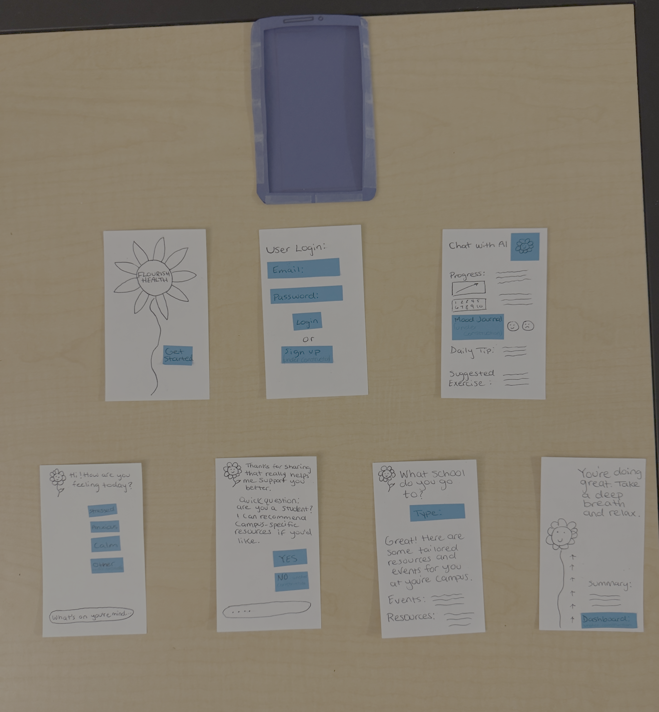
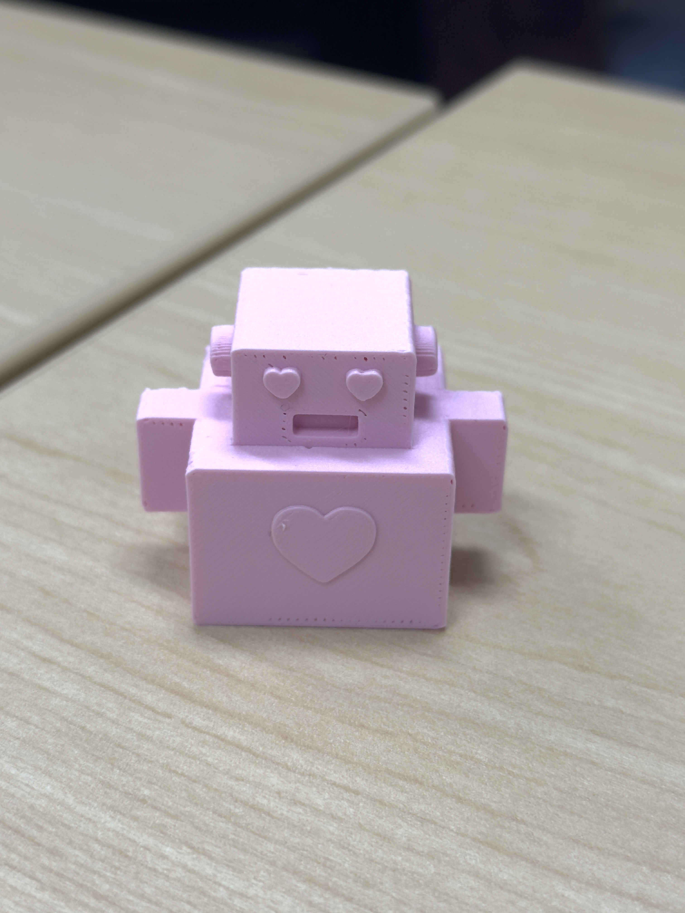
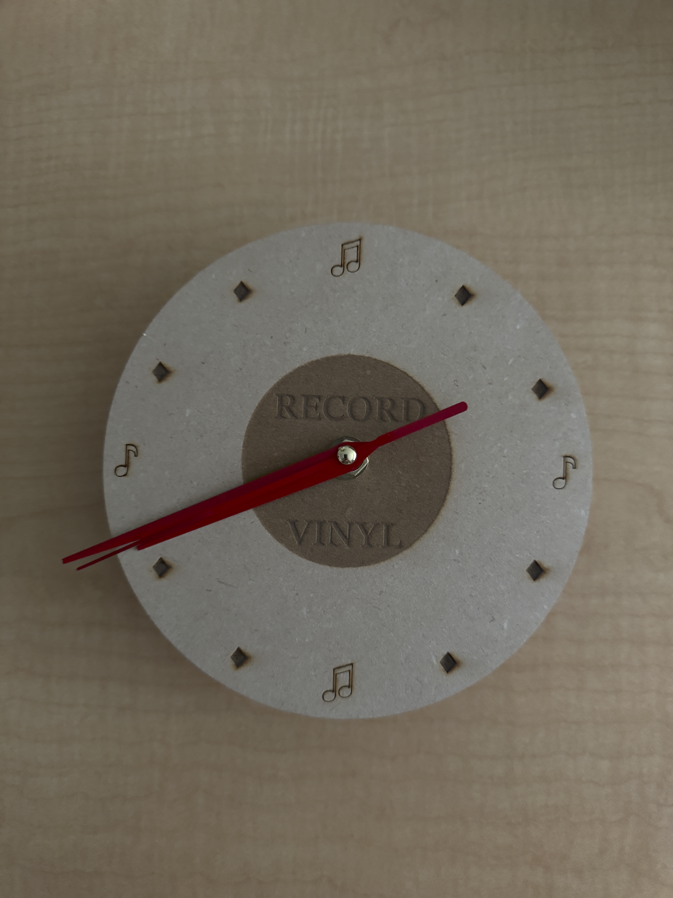

Projects

Mental Health App
A calm, mobile-first concept designed to support mood check-ins and gentle wellbeing habits.
Figma · UI/UX
3D Printed Toy Topper
A playful topper modeled in Tinkercad to sit on top of a walking toy, designed for balance and personality.
Tinkercad · 3D Printing
Laser-Cut Clock
A minimalist, laser-cut clock face designed in Inkscape, inspired by simple shapes and clean lines.
Inkscape · Laser Cutting